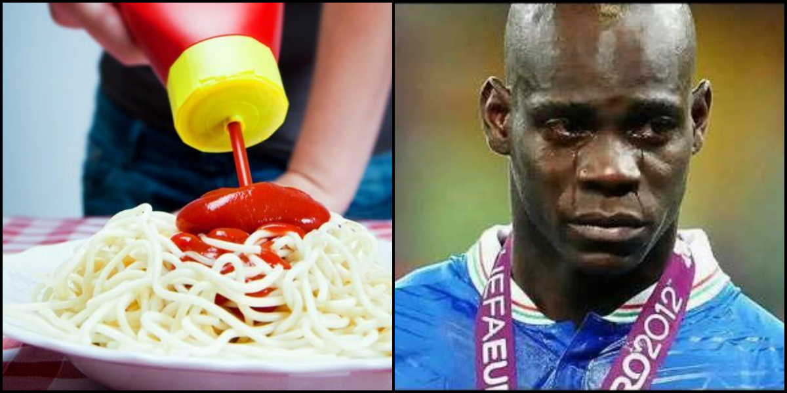
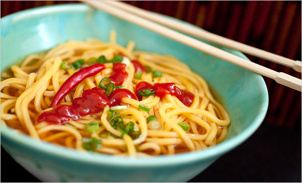

Food You Should Not Eat With Ketchup
Although a lot of people prefer not having any ketchup at all, there are still a lot who will squeeze the bright liquid on top of everything they eat. But, never ever, ever, ever, ever eat ketchup with these dishes.
 Steak
Rare or medium rare, nobody is going to say well-done when you pour dollops of ketchup on that tender and juicy piece of meat. Kindly avoid this misteak and use some steak sauce instead.
Steak
Rare or medium rare, nobody is going to say well-done when you pour dollops of ketchup on that tender and juicy piece of meat. Kindly avoid this misteak and use some steak sauce instead.

Pasta
When you add ketchup to your pasta, an Italian suffers a heart attack. Alfredo and pesto are some among the endless pastabilities of sauces you can have with your penne, fusili, spaghetti and macaroni.
 Pizza
A lot of us mistake the marinara sauce on pizzas to be tomato ketchup. And just when you think that the amount of sauce is not enough, you take some more on your plate. That right there is when the previously mentioned Italian is on the verge of a nervous breakdown, cardiac arrest, and pizzalysis.
Pizza
A lot of us mistake the marinara sauce on pizzas to be tomato ketchup. And just when you think that the amount of sauce is not enough, you take some more on your plate. That right there is when the previously mentioned Italian is on the verge of a nervous breakdown, cardiac arrest, and pizzalysis.
 Tacos
The global image of this Mexican food has already been tarnished by a well-known fast food chain. Does that ring a Bell? You tend to make it worse by dunking your tacos in ketchup and completely destroying the flavor of the filling and guacamole. How about no?
Tacos
The global image of this Mexican food has already been tarnished by a well-known fast food chain. Does that ring a Bell? You tend to make it worse by dunking your tacos in ketchup and completely destroying the flavor of the filling and guacamole. How about no?

Noodles
Much like your spaghetti, this stringy specialty is ruined when you add ketchup it. Yes, Maggi tastes great with it. But don’t go about painting every noodle dish red. Please.
Dim sum/Momos
When dining at posh restaurant, you politely ask for some ketchup to go with your dim sum, but when eating roadside momos, your tone varies, but only slightly, “BHAIYA SAUCE DENA”. The chicken actually clucks in disapproval, the vegetables question as to why they were harvested to be put in a dumpling, which is going to be eaten with ketchup, but you, you enjoy this.
Dhokla
Ask a Gujju for some ketchup and he’ll respond with an “Arra ra ra ra”. Also, you don’t want to mess with Gujaratis and their food. So, just stick to the chutney, will you?